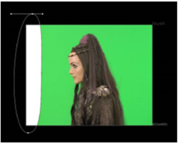

如果您不能使用剪辑级别充分改善屏幕遮罩，您可以在中创建遮罩 核武器 将你肯定想成为前景或背景的像素四舍五入，并将其作为遮罩输入。内部蒙版使前景不太透明，外部蒙版用于清理可能有前景部分显示的背景。它有时被称为 hold out 面具。
外部面具 ( 垃圾掩模) 通常用于清理不是恒定颜色的屏幕，或者通过强制 alpha 透明来清除照明设备。
内部面具可以用来保持前景中你不想失去的元素 (演员在蓝屏前的蓝眼睛)。这些面具通常应该外部软化，以融入屏幕哑光。
下图显示了围绕屏幕左侧照明设备绘制的贝塞尔曲线。

将遮罩连接到 OutM 输入键灯并切换参数 OutM 组件 到 阿尔法 。外部遮罩强制图像的该部分位于背景中，从而将钻机键控出去。
|
|